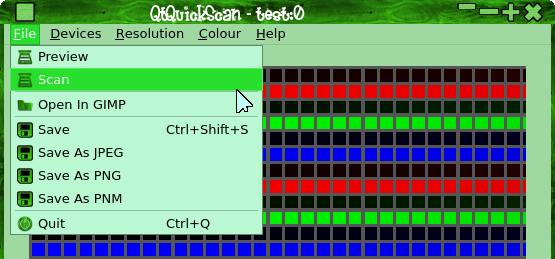
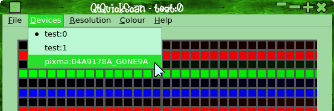
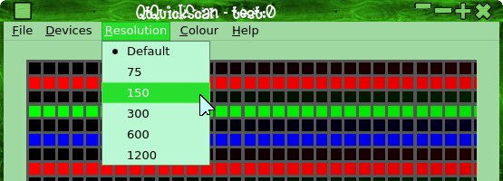
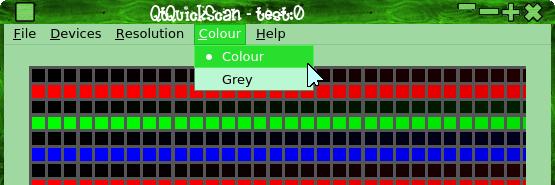
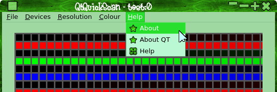

Simple front end for scanners
Can simply output scan as jpg, png or pnm file from the file menu, output is sent to the last folder used using the last name used, changing the suffix if needed, if the last used folder doesn't exist will default to saving files in "/tmp".
On first use output name is output.* and output folder is "/tmp".
You can also open directly in GIMP for further editing.

Select the device.
For testing purposes you can open "/etc/sane.d/dll.conf" and uncomment the 'test' entry.

Select the resolution.

Select mode ( only colour or greyscale for now )

Help menu
